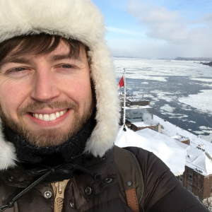

Pfotenhauerstraße 108
01307 Dresden
coleman.broaddus [at] gmail.com
broaddus [at] mpi-cbg.de
@colemanb
github.com/colemanbroad
google scholar
I'm currently working towards a PhD in Computer Science at the MPI-CBG in the Myers Lab focusing on BioImage Analysis for developmental biology. I finished a masters in Nanobiophysics at the BIOTEC in Dresden in 2015, with a thesis supervised by Frank Jülicher. I've been in Dresden since 2010 after finishing an B.S. in Physics at Carnegie Mellon.
Broaddus C, Weigert M, Schmidt U, Myers G. Cell nuclei detection and segmentation from weak annotations. ISBI 2019. (Submitted).
Schmidt U, Weigert M, Broaddus C, Myers G. Cell Detection with Star-convex Polygons. MICCAI 2018.
Weigert M, et al. Content-aware image restoration: pushing the limits of fluorescence microscopy. Nature Methods 15 (2018). 236463.
Stapel LC, Broaddus C, Vastenhouw NL. Detection and Automated Analysis of Single Transcripts at Subcellular Resolution in Zebrafish Embryos. InRNA Detection 2018 (pp. 143-162). Humana Press, New York, NY.
Stapel LC, Lombardot B, Broaddus C, Kainmueller D, Jug F, Myers EW, Vastenhouw NL. Automated detection and quantification of single RNAs at cellular resolution in zebrafish embryos. Development. 2016 Feb 1;143(3):540-6.